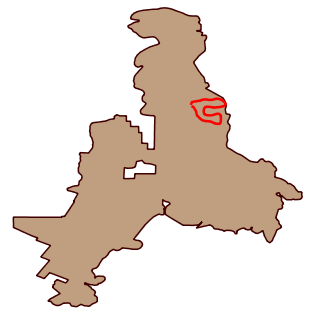

Display all missions that contain an observation or track that matches the given query filters. Filter options include all the survey properties, mission properties and data model categories and attributes.
 |
Example Mission Query |
Results will include one record per mission that matches the given filters. No observation or incident information is included in the results. Mission details are displayed in a tabular window. Mission tracks are displayed in a map window.